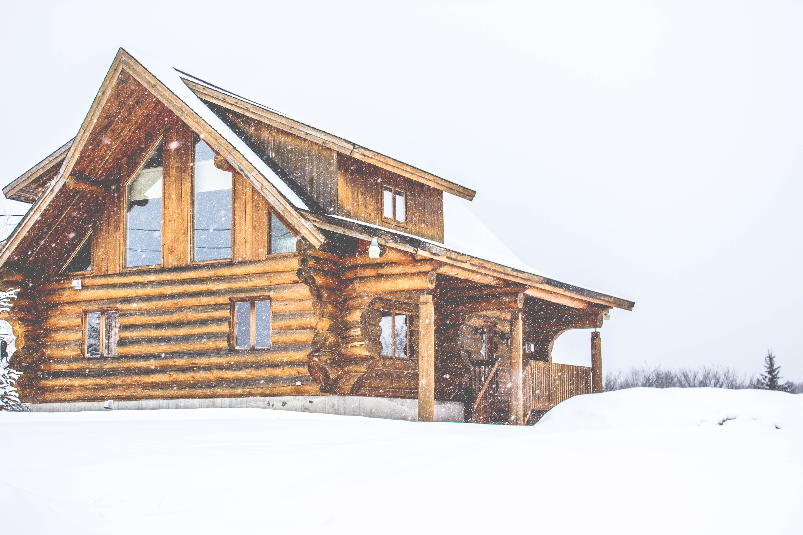

Welcome to Soda Springs, Idaho!

Weather Summary
Currently: Cloudy
High: 47°F
Wind Chill: °F
Humidity: 54%
Wind Speed: 7 mph
5 Day Forecast
| Monday | Tuesday | Wednesday | Thursday | Friday |
|---|---|---|---|---|
 |
 |
|
|
 |
| 49°F | 56°F | 53°F | 49°F | 56°F |
Pretty sweet: Chamber tours handful of sugary businesses
by Colin Tiernan
Source: https://magicvalley.com/business/agriculture/pretty-sweet-chamber-tours-handful-of-sugary-businesses/article_a79a62fc-1613-57f2-85f0-ea271247624e.html#1 
TWIN FALLS — A couple of dozen grownups sat on hay bales in trailers while Kirt Tubbs, in his tractor, drove the group around his farm.
The Tubbs Berry Farm hayride was part of the Twin Falls Chamber of Commerce’s Sweet Magic Valley tour Wednesday, which included stops at Israel Bravo’s Cold Bee Storage business and Amalgamated Sugar’s refinery. The tour aimed to give attendees an inside look at Magic Valley agriculture.
“We’re showing everybody as a community what we do here, what we produce out here,” Bravo, the Twin Falls Area Chamber of Commerce’s member services coordinator, said. “Whether it’s honey, bees, Amalgamated Sugar, Tubbs (Berry Farm), it’s all connected somehow.”
Tubbs Berry Farm, run by Kirt Tubbs and his wife, Heidi, specializes in agritourism and educating the public about agriculture. The tour attendees weren’t the only ones getting an education in ag Wednesday morning. Dozens of kids ran about the farm on their own tours, although the Chamber group didn’t spend as much time going down hay slides.
Kirt Tubbs said he takes his role as an educator seriously.
“Even if you’re in the Magic Valley, a lot of people haven’t been around all the ag,” he said.
Like many Magic Valley residents, Tubbs grew up on a farm. He had a 20-year career as a biologist before recently switching to the tractor full-time. The farm itself isn’t new though — Tubbs began planting trial plots 15 years ago.
Tubbs said that he wanted to run a farm for his children’s sake. He said that living on a farm helps foster a strong work ethic.
“I realized our kids weren’t getting the same experience I had growing up,” he said.
Tubbs Berry Farm is an outlier in the Magic Valley. The farm is just 50 acres, and the crops are unusual too — you won’t find too many other berry or garlic farmers in Twin Falls County. On top of that, most of the crops are sold directly from the farm, which is just five minutes or so from downtown Twin Falls.
The business model is different, too. The Tubbs’ farm doesn’t just rely on berry, garlic and pumpkin sales — tours, beekeeping courses and seasonal products all play a role in keeping the place running.
Fall is an important time of year. The farm is currently running mazes, hay slides and a big pumpkin patch.
“Our goal with this is that families come out with their kids and make good memories,” Tubbs said.
The Magic Valley is known for beans, corn, beets, hay, wheat and dairy. None of those is the Tubbs’ bread and butter.
The Tubbs grow a handful of berry varieties, including red raspberries, black raspberries, blackberries and strawberries.
Not all of those crops handle the high desert equally well. Strawberries don’t like too much heat and south-central Idaho’s soil simply isn’t right. Strawberries aren’t a big moneymaker, but people still like to pick them, so while they might not be lucrative, they’re still worth growing because they bring people to the farm.
Berries, in general, are a tricky crop to grow. It takes a few years before new raspberry plants start bearing fruit, so farmers have to be patient.
“Growing berries is not for the faint of heart,” Kirt Tubbs said.
If the berries didn’t set Tubbs Berry Farm apart enough, the garlic might.
The Tubbs grow a handful of varieties of garlic and sell most of it online. All of the varieties are disease-free. Because of that, a lot of the sales are for seed garlic.
Garlic is a labor-intense crop. Even though there is some equipment available for planting and harvesting cloves, the whole harvest and planting process is done almost entirely by hand, Tubbs said. Right now the farm has about three acres of garlic, so hand planting and harvesting take a while.
Now is the time to plant garlic. The cloves sprout roots, grow through winter and are ready for a July or August harvest.
In addition to garlic and berries, the Tubbs grow 30 varieties of pumpkins and squash and also sell their own honey.
The farm will continue to grow different crops in the future. Tubbs said he’s testing elderberries and saskatoons right now.
“We’re always trying new things to see what’ll grow here.”

Community Weather
196 N. State Street
Preston, ID 83263
(208)555-5555
communityweather@gmail.com